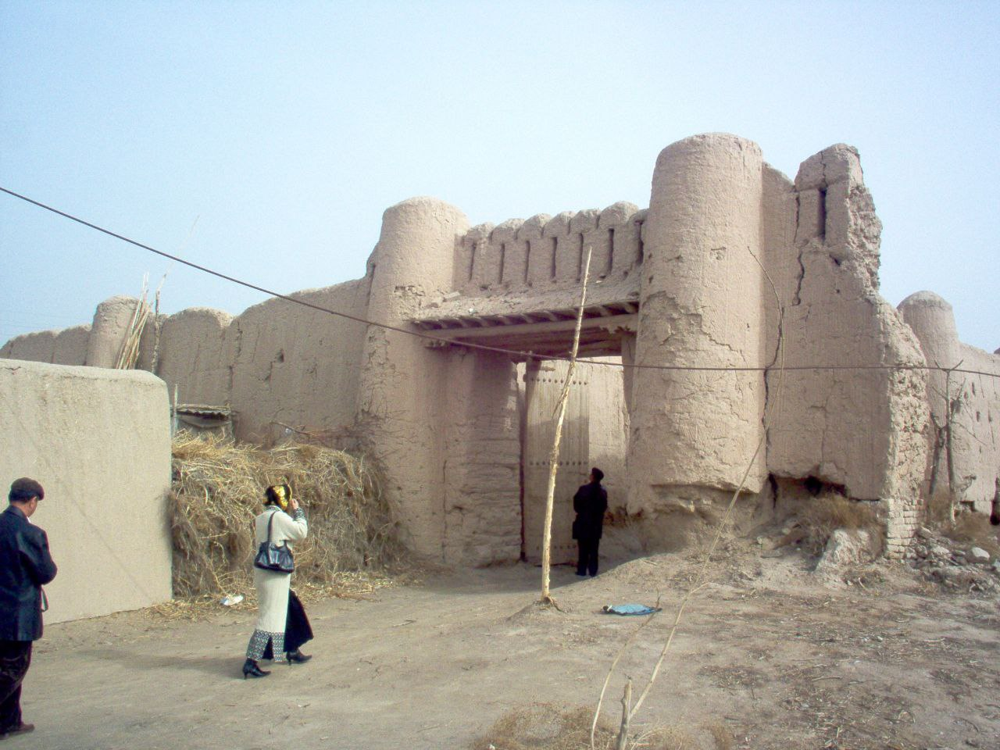
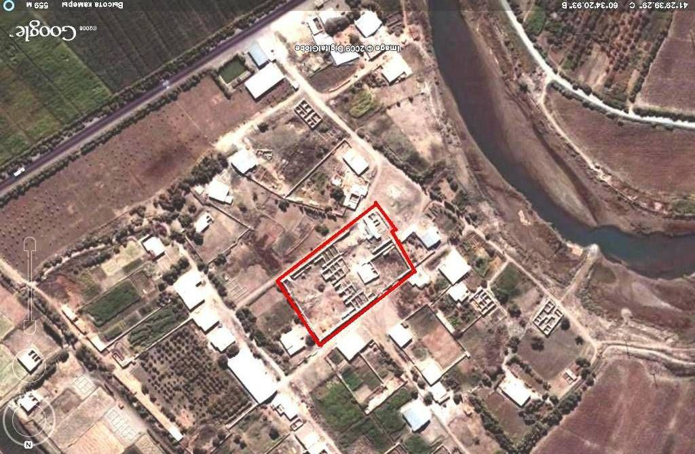

"ULLI HOVLI"
1. Me’moriy inshootning nomi:
"ULLI HOVLI"
2. Me’moriy inshoot tiklangan yil:
1873-74 yillarda qurilgan
3. Me’moriy inshoot joylashgan manzil:
Urganch tumani Gʻoybu qishlog‘ida Gʻozovot kanali bo‘yida joylashganю
4. Me’moriy inshootning qurilish materiallari:
Xom g‘isht, paxsa - guvala, qum, alebastr-ganch, yog‘och
5. Inshootning bosh fasadi h.k.lar:


6. Me’moriy inshootning o‘lchamlari
“Ulli Hovli” tarixiy me’moriy yodgorligining umumiy o‘lchami – 107,58 x 64,06 m (janubiy sharqiy tomoni) va 110,09 x 65,71 m (g‘arbiy shimoliy tomoni) bo‘lib, reja bo‘yicha hovli trapesiya shakliga yaqin bo‘lib tiklangan. Hovli Bosh fasadining balandligi, ya’ni darvozaning ikki yonbosh tomonidagi “kungura”larni hisoblaganda 6,8 – 7,0 m.
7. Me’moriy inshoot to‘g‘risida tarixiy ma’lumot:
Abulg‘ozi Bahodirxonning “Shajarai Tarokima” asariga asosan ular taxminan 1690-1700 yillarda Xorazmda turkmanlar vatan tutganlar. Shulardan Xo‘jamberdi Bojimon Olauylik hududida 100 xonalik katta bino qurilishi boshlangan. Shu bino bir necha yilda qurilgan. Uni Ulli (katta) Hovli deb ataganlar. Unda 15 oila yashagan. Ulli Hovli qadimiy me’morchilik yodgorligi sifatida kinochilarning diqqatini tortdi.
1976 yilda mashxur o‘zbek kinorejissyori Komil Yormatov bu yerda “Uzoq va yakin yillar” tarixiy filmini suratga oldi. Shuningdek, Bolgariya va Vengriya kinomategrafchilari ham o‘z filmlarining bir kator epizodlarini Ulli Hovlida lentaga tushirganligi maьlum.
Ulli hovli dastlabki qurilgan davrda 100 ta xonadan iborat bo‘lgan , katta hajmdagi turar - joy imoratiga mo‘ljallab tiklangan. Hozirgi davrga kelib hovlining saqlanib qolgan katta-kichik xonalari soni - 35 ta. Me’moriy yodgorlik hozirda sayyohlik yo‘nalishiga qo‘shilgan.
8. Me’moriy inshootning texnik holati:
3% devor konstruksiyalari ekologik va texnogen ta’sirlar natijasida yo‘qolib ketgan, hozirda ta’mirlangan.
BOSH SAHIFAGA QAYTISH